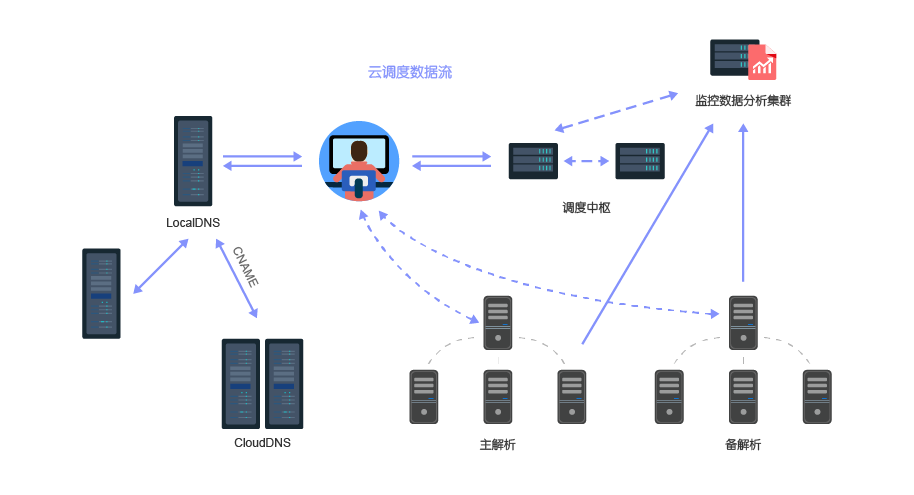
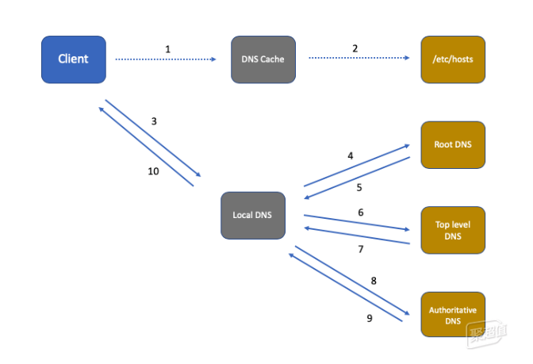

GTM
GTM：global-traffic-manager广域网流量管理
根据业务策略，数据中心状况，网络状况和应用性能来分配最终用户的应用请求，实现最高的应用性能，更短的停机时间以及更简化的管理。通过智能的响应DNS查询提供服务的一种方式。DNS的作用把域名与IP地址对应起来的一种技术。
GTM工作场景：
- 用户发起请求，首先解析域名。
- DNS查询到达F5 GTM/BIG-IP DNS。
- GTM根据策略（如地理位置、数据中心健康状况、应用程序性能、负载）选择合适的数据中心。
- GTM响应DNS查询，返回最适数据中心的IP地址。
- 用户的请求由DNS解析后的IP直接送达被选定的数据中心处理。 
GTM应用场景
场景一：主备IP容灾
客户网站是由多个源站（或数据中心）进行服务支撑时，使用主备智能切换可以确保服务高可用。简单说，有两个IP地址A（主）和B（备），正常情况下，用户访问IP地址A、当IP地址A故障后，用户将不再访问到IP地址A，而是访问到IP地址B。
场景二：多级备份
客户网站是由多个数据中心进行服务支撑时，根据实际情况进行备份分级，实现有线同城备份，再次异地备份。
场景三：高并发下的****负载均衡
用户量大，或者用户突增（如年中大促、双十一、618促销等）情况下，需要对源站多个IP配置负载均衡，避免源站崩溃。通过网宿GTM，只需要配置调度策略，即可实现权重负载均衡。假设源站有多个IP地址A，B，C，D，A、B设为主源，C，D作为备源，A的性能最佳，主源A，B的负载比例可设为3:2，即A的负载为60%，B的负载为40%，当主源全部故障时，备源将启用，当主源恢复时，切回主源。
场景四：CDN智能互备
当客户网站有使用多个CDN服务商时，通过全网融合流量分配解决方案可实现CDN之间的互备。
DNS解析

CDN内容分发
1.用户输入访问的域名,操作系统向 LocalDns 查询域名的ip地址. 2.LocalDns向 ROOT DNS 查询域名的授权服务器(这里假设LocalDns缓存过期) 3.ROOT DNS将域名授权dns记录回应给 LocalDns 4.LocalDns得到域名的授权dns记录后,继续向域名授权dns查询域名的ip地址 5.域名授权dns 查询域名记录后(一般是CNAME)，回应给 LocalDns 6.LocalDns 得到域名记录后,向智能调度DNS查询域名的ip地址 7.智能调度DNS 根据一定的算法和策略(比如静态拓扑，容量等),将最适合的CDN节点ip地址回应给 LocalDns 8.LocalDns 将得到的域名ip地址，回应给 用户端 9.用户得到域名ip地址后，访问站点服务器 10.CDN节点服务器应答请求，将内容返回给客户端.(缓存服务器一方面在本地进行保存，以备以后使用，二方面把获取的数据返回给客户端，完成数据服务过程)
LTM
GTM：local-traffic-manager局域网流量管理
LTM是在进行本地流量管理，可以对服务器节点之间的流量进行管理；
- 客户发出服务请求到VIP
- BIGIP接收到请求，将数据包中目的IP地址改为选中的后台服务器IP地址，然后将数据包发出到后台选定的服务器
- 后台服务器收到后，将应答包按照其路由发回到BIGIP
- BIGIP收到应答包后将其中的源地址改回成VIP的地址，发回客户端，由此就完成了一个标准的服务器负载均衡的流程。
2.负载均衡典型流程
- 通过VIP来截获合适的需要负载均衡的流量
- 服务器监控和健康检查,随时了解服务器群的可用性状态
- 负载均衡和应用交换功能,通过各种策略导向到合适的服务器
2.1 通过VIP来截获合适的需要负载均衡的流量
在BIGIP上通过设置VIP来截获需要进行负载均衡的流量，这个VIP地址可以是一个独立的主机地址和端口的组合（例如：202.100.1.1:80）也可以是一个网络地址和端口的组合（例如：202.100.1.0:80），当流量经过BIGIP的时候，凡是命中VIP的流量都将被截获并按照规则进行负载均衡。
2.2 服务器的健康监控和检查
2.3 负载均衡和应用交换功能,通过各种策略导向到合适的服务器
LTM和GTM的对比
LTM是在进行本地流量管理，可以对服务器节点之间的流量进行管理；
而GTM不参与服务器节点的具体应用分发，但是它从整个广域网层面进行数据中心或者链路之间的数据分发；
所以在某些环节中，LTM和GTM是综合运用的，也就是从链路层面或者多中心的层面就利用GTM划分，而到了单一的应用服务器前端，我们可以用LTM进行应用分发，LTM和GTM的这种联合应用有很多种联合部署方式
下面就为大家描述其中两种联合部署方式：
举例：一个企业拥有北京和广州两个数据中心，每个数据中心都是在多链路的模式下，在部署F5设备的时候，就可以在每个数据中心的出口部署相对应的GTM设备，而在每个数据中心的后端，也就是在应用服务器的前端，则部署相对应的LTM设备，这样就可以通过GTM来对北京和广州两个数据中心之间的应用分发，并且同时还要对每个数据中心的多条链路之间的情况进行分发，而LTM在服务器前端，对进入到LTM设备的应用请求往各个服务节点进行分发。
LTM、GTM单独部署的优缺点
优点：结构清晰，便于实施和扩展；LTM和GTM互不干扰。
缺点：一次性投入较大。
LTM、GTM整合部署
来进行单独部署
GTM就类似于通过dns域名解析选择合适的数据中心发送网络请求，LTM就是实际的网络走向，VS到pool等流转，可以结合使用
个人总结：
GTM与LTM均为实现负载均衡或者多服务器调度管理。GTM针对的是广域网，调度的是全国各地的数据中心，通过DNS解析规则，分发流量。LTM是局域网内通过命中vip，设备拦截后通过设置的pool 找到对应的服务器节点，再返回数据。针对不同的对象做的不同的方案。实际是差不多意思。实现不一样